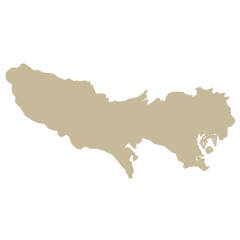
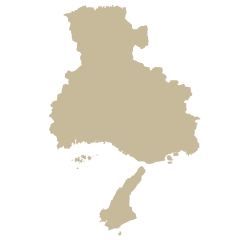
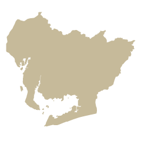
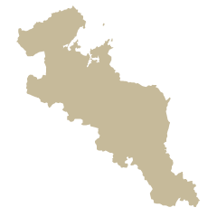
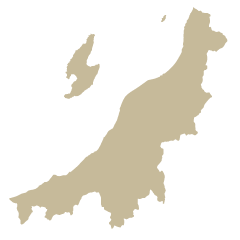
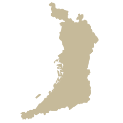

ABOUT
こんなことをかんがえています
産地テーブルは世界の地方にまつわるストーリーを
東京のテーブルに並べます
ひとくちから旅がはじまる
こんなことをかんがえています
産地テーブルは世界の地方にまつわるストーリーを
東京のテーブルに並べます
ひとくちから旅がはじまる
こんなことをやっていきます
1日限りのレストラン
食材のオーナー制度
食材・お土産の販売
旅の企画
メディア・展示会
食を切り口に産直レストラン、産地食材のオーナー制度、
ECサイト運営、産地への旅を通じた地域活性化企画、
メディア運営や展示会、産地と共同での商品開発や
ブランディング、PRを進めます。
こんなひとたちでやっています

MAI ITO
西東京市 / TOKYO

ASUKA NAKASHIMA
神戸市 / HYOGO

SAYAKA FUKUSATO
豊田市 / AICHI

KEIKO MORINISHI
南山城村 / KYOTO

TAKASHI TSUCHIYA
村上市 / NIIGATA

KENJIRO NII
箕面市 / OSAKA
TOTARO TANAKA
川西市 / HYOGO
SHIGENARI MASHIKO
江戸川区 / TOKYO
都市に暮らす人・地方に暮らす人、
双方の力で、この活動を広げていきたいです！
東京から地方を盛り上げたい方、
田舎が好きな方、「食」に興味のある方、
自治体の方、町おこしをされている方、生産者の方、
東京でスペースを貸してくれる方、
料理人の方、外国人の方、とりあえず面白そうと思った方、
少しでも気になった方は気軽に連絡ください！
新たなメンバーを待ってます！